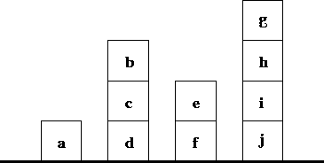

Ausgewählte Lösungen zu den Aufgaben
Programmierparadigmen
1 Teil 1 (5. Semester)
1.1 Aufgabe (SEND-MORE-MONEY)
Lösen Sie das SEND-MORE-MONEY-Problem aus der Vorlesung (Aufgabe: Mehr Geld bitte!) in einer Programmiersprache Ihrer Wahl! Beachten Sie Nebenbedingungen.
1.2 Aufgabe (Beweis Pkw-Motorräder-Problem)
Führen Sie für das Pkw-Motorräder-Problem aus der Vorlesung den dort verlangten Beweis!
Es gilt:
- \[P=\frac{m-2n}{2}\]
- \[m \mbox{ gerade und } 2n\leq m \leq4n \]
Zu zeigen:
- \(P\) ist eine ganze Zahl:
Wenn die Zahl der Räder \(m\) gerade ist, ist auch ist auch \(P\) gerade und damit eine ganze Zahl. - \(P\) wird nicht negativ:
Aus \(2n\leq m\) folgt, dass \(P\) nicht kleiner als 0 wird. - \(P\) wird nicht größer als \(n\):
Aus \(m \leq4n\) folgt, dass der maximale Wert von \(P\) gleich \(n\) ist.
1.3 Aufgabe (Einstieg in SML)
Schreiben Sie eine Funktion
sum_pair_list(Signatur:(int * int) list -> int), die eine Liste von Paaren, bestehend aus zwei Ganzzahlen, summiert. Z. B. liefert der Aufrufsum_pair_list [(2,3), (4,5)]
den Wert 14.
fun sum_pair_list (xs : (int * int) list) = if null xs then 0 else #1 (hd xs) + #2 (hd xs) + sum_pair_list(tl xs)Schreiben Sie eine Funktion
firsts(Signatur:(int * int) list -> int list), die aus einer Liste von Paaren, bestehend aus zwei Ganzzahlen, eine Liste mit den jeweils ersten Elementen der Paare extrahiert. Z. B. liefert der Aufrufsum_pair_list [(2,3), (4,5)]
den Wert
[2,4]fun firsts (xs : (int * int) list) = if null xs then [] else (#1 (hd xs))::(firsts(tl xs))- Schreiben Sie eine Funktion
seconds, die analog zufirstsdie jeweils zweiten Elemente einer Liste von Paaren liefert. Schreiben Sie die Funktion
sum_pair_listneu unter Verwendung der Funktionenfirstsundseconds.fun sum_pair_list2 (xs : (int * int) list) = (sum_list (firsts xs)) + (sum_list (seconds xs))Schreiben Sie eine Reihe von Funktionen, die Kalenderdaten (in vereinfachter Form) verarbeiten. Jedes Datum ist ein SML-Wert vom Typ
int*int*int, also ein Tripel bestehend aus je einer ganzen Zahl für den Tag, den Monat und das Jahr, in dieser Reihenfolge. Ein korrektes Datum enthält ein positives Jahr, einen Monat zwischen 1 und 12 und einen Tag nicht größer als 31 (oder weniger, abhängig vom Monat).Achtung:
Die im Folgenden zu entwerfenden Funktionen müssen nur für korrekte Kalenderdaten das richtige Resultat liefern, d.h. sie müssen die Korrektheit eines Datums nicht prüfen.
Schreiben Sie eine Funktion
ist_frueher, die zwei Kalenderdaten akzeptiert und einen booleschen Wert liefert, Sie lieferttrue, wenn das erste Datum zeitlich vor dem zweiten liegt. Wenn beide Kalenderdaten gleich sind, ist das Ergebnisfalse.fun ist_frueher (day1 : int*int*int, day2 : int*int*int) = (#1 day1) < (#1 day2) orelse (((#2 day1) < (#2 day2)) andalso ((#1 day1) = (#1 day2))) orelse (((#3 day1) < (#3 day2)) andalso ((#2 day1) = (#2 day2)) andalso ((#1 day1) = (#1 day2)))Schreiben Sie eine Funktion
kalenderdaten_in_monat, die eine Liste von Kalenderdaten und einen Monat (ganze Zahl) akzeptiert. Sie liefert eine Liste mit denjenigen Kalenderdaten aus der Argumentiste, die in dem gegebenen Monat liegen. Die Reihenfolge der Kalenderdaten in der Ergebnisliste ist unerheblich.fun kalenderdaten_in_monat(ld: (int*int*int) list, m: int) = if null ld then [] else let val md = (hd ld) in if #2 md = m then md::kalenderdaten_in_monat(tl ld, m) else kalenderdaten_in_monat(tl ld, m) endSchreiben Sie eine Funktion
kalenderdaten_in_monaten, die eine Liste von Kalenderdaten und eine Liste von Monaten (Liste ganzer Zahlen) akzeptiert. Sie liefert eine Liste bestehend aus den Kalenderdaten aus der Argumentliste, die in irgendeinem Monat aus der Monatsliste liegen. Die Reihenfolge der Kalenderdaten in der Ergebnisliste ist unerheblich.Hinweise:
- Benutzen Sie die Lösung des vorangegangenen Aufgabenteils!
- Sie dürfen davon ausgehen, dass kein Monat in der Monatsliste mehrfach vorkommt.
fun kalenderdaten_in_monaten(ld: (int*int*int) list, lm: int list) = if null lm then [] else kalenderdaten_in_monat(ld, hd lm) @ kalenderdaten_in_monaten(ld, tl lm)- (optional) Schreiben Sie nun eine Funktion
kalenderdaten_in_monaten_2, die die gleiche Aufgabe wiekalenderdaten_in_monatenlöst, nun aber dafür sorgt, dass ein mehrfach in der Monatsliste vorkommender Monat keinen Einfluss auf das Resultat hat.
1.4 Aufgabe (Mustervergleich)
Gegeben sei die folgende Datendefintion für arithmetische Ausdrücke, bestehend aus Konstanten, Negationen, Additionen und Multiplikationen.
datatype exp = Constant of int | Negate of exp | Add of exp * exp | Multiply of exp * expDurch diese rekursive Datendefintion werden Bäume definiert, deren Blätter ganze Zahlen und deren interne Knoten entweder Negationen mit einem Kindknoten oder Additionen bzw. Multiplikationen mit je zwei Kindknoten sind.
Die folgenden SML-Funktionen akzeptieren alle einen Wert vom Typ
expals Argument.Schreiben Sie eine SML-Funktion
eval, die den ganzzahligen Wert des Arguments berechnet.Z. B. liefert der Aufruf
eval (Add (Constant 19, Negate (Constant 4)))
den Wert 15.
fun eval e = case e of Constant i => i | Negate e1 => ~ (eval e1) | Add(e1,e2) => (eval e1) + (eval e2) | Multiply(e1,e2) => (eval e1) * (eval e2)Schreiben Sie eine SML-Funktion
list_of_constants, die eine Liste mit allen Konstanten des Ausdrucks liefert.fun list_of_constants e = case e of Constant i => [i] | Negate e => (list_of_constants e) | Add (e1,e2) => (list_of_constants e1) @ (list_of_constants e2) | Multiply (e1,e2) => (list_of_constants e1) @ (list_of_constants e2)Schreiben Sie eine SML-Funktion
largest_constant, die die größte Konstante des Ausdrucks ermittelt.fun largest_constant e = let fun max (xs : int list) = case xs of x::[] => x | x::xs' => let val tl_max = max(xs') in if x > tl_max then x else tl_max end in max (list_of_constants e) endSchreiben Sie eine SML-Funktion
number_of_adds, die Anzahl der Additionen im Ausdruck ermittelt.fun number_of_adds e = case e of Constant i => 0 | Negate e1 => number_of_adds e1 | Add(e1,e2) => 1 + number_of_adds e1 + number_of_adds e2 | Multiply(e1,e2) => number_of_adds e1 + number_of_adds e2
- Funktionen für ein frei erfundenes Kartenspiel (Solitär) vgl. Prüfungsvorleistung
1.5 Aufgabe (Destructuring in Clojure)
Überlegen Sie, wie Kreise, die durch
- die Koordinaten des Mittelpunkts und
- den Radius
und die Punkte durch Clojure-Maps dargestellt werden können.
Schreiben Sie anschließend eine Funktion, die prüft, ob ein Punkt innerhalb eines Kreises liegt. Machen Sie dabei für die Argumente der Funktion (sowie etwaiger Hilfsfunktionen) von den Möglichkeiten des Destructurings Gebrauch.
(ns circle) (use 'clojure.test) ;; Erzeugung von Hashmaps für Punkte und Kreise (defn make-point [x y] {:x x :y y}) (defn make-circle [center radius] {:center center :radius radius}) ;; berechnet den Abstand zwischen zwei übergebenen Punkten im Zweidimensionalen (defn point-distance [{x1 :x y1 :y} {x2 :x y2 :y}] (Math/sqrt (+ (Math/pow (Math/abs (- x1 x2)) 2) (Math/pow (Math/abs (- y1 y2)) 2)))) ;; prüft, ob ein Punkt innerhalb eines Kreises liegt, dabei werden der Kreis und ;; der Punkt übergeben (defn in-circle? [{center :center radius :radius} point] (<= (point-distance center point) radius)) (deftest circle-test (is (= (point-distance (make-point 1 1) (make-point 1 2)) 1.0)) (is (= (point-distance (make-point 7 2) (make-point 2 2)) 5.0)) (is (let [d (point-distance (make-point 5 5) (make-point 2 4))] (and (> d 3.16) (< d 3.17)))) (is (in-circle? (make-circle (make-point 10 10) 2) (make-point 10 9))) (is (not (in-circle? (make-circle (make-point 7 3) 5) (make-point 2 2)))) (is (in-circle? (make-circle (make-point 9 2) 7) (make-point 8 4)))) (run-tests)
1.6 Aufgabe (Anwendung von FHO auf eigene Datenstrukturen)
Schreiben Sie für den Datentyp exp (vgl. Aufgabe (Mustervergleich))
eine Funktion all_odd, die prüft, ob alle Konstanten eines
Ausdrucks ungerade sind.
Gehen Sie wie folgt vor:
- Schreiben Sie eine Funktion höherer Ordnung
true_for_all_constants, die ein Prädikat (Funktion mit booleschem Resultat)pund einen Ausdruckevom Typexpals Argumente akzeptiert, und als Resultat genau danntrueliefert, wenn die Anwendung vonpauf alle Konstanten vonetrueliefert. - Schreiben Sie dann die Funktion
all_oddunter Verwendung vontrue_for_all_constants.
datatype exp = Constant of int | Negate of exp | Add of exp * exp | Multiply of exp * exp
fun is_odd v =
(v mod 2 <> 0)
fun true_of_all_constants(p,e) =
case e of
Constant i => p i
| Negate e1 => true_of_all_constants(p,e1)
| Add(e1,e2) => true_of_all_constants(p,e1)
andalso true_of_all_constants(p,e2)
| Multiply(e1,e2) => true_of_all_constants(p,e1)
andalso true_of_all_constants(p,e2)
fun all_odd e = true_of_all_constants(is_odd,e)
1.7 Aufgabe (Curryfizierung, Entcurryfizierung, partielle Anwendung)
Gelegentlich liegen die Argumente curryfizierter Funktionen nicht in der gewünschten Reihenfolge vor. Manchmal liegt eine curryfizierte Funktion vor, die man lieber mit Tupel aufrufen möchte, und umgekehrt.
Machen Sie sich klar, wie die folgenden Funktionen mit diesen Problemen umgehen.
fun other_curry1 f = fn x => fn y => f y x fun other_curry2 f x y = f y x fun curry f x y = f (x,y) fun uncurry f (x,y) = f x y
Anmerkung: Wenn Sie die Typen dieser Funktionen betrachten
val other_curry1 = fn : ('a -> 'b -> 'c) -> 'b -> 'a -> 'c val other_curry2 = fn : ('a -> 'b -> 'c) -> 'b -> 'a -> 'c val curry = fn : ('a * 'b -> 'c) -> 'a -> 'b -> 'c val uncurry = fn : ('a -> 'b -> 'c) -> 'a * 'b -> 'cund darin
->als Implikation und*als Konjunktion interpretieren, werden Sie feststellen, dass die Typen der Funktionen allesamt Tautologien sind.Welche Funktionen sind das Resultat der partiellen Anwendung der folgenden curryfizierten Funktionen:
fun plus i j : int = i+j; fun lesser a b : real = if a<b then a else b; fun pair x y = (x,y); fun equals x y = (x=y);
(plus i)ist die Funktion, dieiauf ihr Argument addiert.(lesser a)ist eine „begrenzte“ Identitätsfunktion: das Resultat ist das Argument, solange es nicht größer alsaist.(pair x)ist die Funktion, diexmit ihrem Argument zu einem Tupel (Paar) verbindet.(equals x)ist die Funktion, diexerkennt: Sie liefert true, wenn sie auf x angewendet wird.
Gibt es einen praktischen Unterschied zwischen den beiden Deklarationen der Funktion
f. Die Funktiongundhseien gegeben.fun f x y = h (g x) y; fun f x = h (g x);
Wenn
(f x)auf viele verschiedene Werte vonyangewendet wird, ist die zweite Variante effizienter. Durch Bindung von(f x)an eine Variable (z. B.val e = f 3) wird der Ausdruckh(g 3)genau einmal ausgewertet. Der Ausdrucke ykann dann beliebig oft auswertet werden, ohne dassh(g 3)erneut auswertet wird.Schreiben Sie zunächst eine Funktion
ist_teilbar_durch = fn : int -> int -> bool
, die überprüft, ob ihr zweites Argument ohne Rest durch ihr Argument teilbar ist.
Benutzen Sie anschließend die Funktion
List.filter, um eine Liste von ganzen Zahlen hinsichtlich ihrer Teilbarkeit durch eine bestimmte Zahl zu filtern. Füllen Sie den folgenden Lückentext so aus, dass die Ausdrücketrueliefern:(List.filter ... [1,2,3,4,5,6,7,8,9]) = [3,6,9] (List.filter ... [1,2,3,4,5,6,7,8,9]) = [4,8]
(* prüft, ob nd durch or ohne Rest teilbar ist *) fun ist_teilbar_durch or nd = (nd mod or) = 0 val l1 = (List.filter (ist_teilbar_durch 3) [1,2,3,4,5,6,7,8,9]) = [3,6,9] val l2 = (List.filter (ist_teilbar_durch 4) [1,2,3,4,5,6,7,8,9]) = [4,8]
1.8 Aufgabe (alternative Listenimplementierung)
Gegeben sind folgende Definitionen für cns und fst:
(ns dataasproc) (use 'clojure.test) (def cns (fn [x y] (fn [m] (m x y)))) (def fst (fn [z] (z (fn [p q] p))))
Verifizieren Sie, dass der Ausdruck
(fst (cns x y))als Resultatxliefert.Der Ausdruck
(cns 3 4)liefert eine Funktion, die ausgeschrieben so aussieht:(fn [m] (m 3 4))
Demnach ist der Ausdruck
(fst (cns 3 4))gleich(fst (fn [m] (m 3 4))).
Wertet man diesen Ausdruck gemäß Ersetzungsmodell aus, ergeben sich folgende äquivalente Ausdrücke:
((fn [z] (z (fn [p q] p))) (fn [m] (m 3 4)) ) ((fn [m] (m 3 4)) (fn [p q] p)) ((fn [p q] p) 3 4) 3
Fügen Sie die passende Definition von
rsthinzu.(def rst (fn [z] (z (fn [p q] q))))
1.9 Aufgabe (Datentyp Nat)
- Schreiben Sie eine Funktion
repeat, die eine natürliche Zahl \(n\in Nat\) (Definition des Datentyps \(Nat\) s. Vorlesung) und ein Symbol \(s\) als Argumente nimmt und eine Liste mit dem \(n\) -maligen Auftreten von \(s\) erzeugt. Schreiben Sie eine Funktion
Int->Nat, die eine beliebige positive ganze Zahl in eine äquivalentes Element des Datentyps \(Nat\) verwandelt, z.B.:(Int->Nat 3) => (succ (succ (succ zero)))Schreiben Sie eine Funktion
Nat->Int, die eine natürliche Zahl \(n\in Nat\) in eine normale Clojure-Number verwandelt, z.B.:(Nat->Int (succ (succ (succ zero)))) => 3Schreiben Sie eine Funktion
;; times: Nat Nat -> Nat
, die zwei natürliche Zahlen multipliziert.
(ns nat) (use 'clojure.test) (def zero 'zero) ;; succ: Nat -> Nat (def succ (fn [n] (list 'succ n))) (deftest test-succ (is (= (succ zero) (succ zero))) (is (= (succ (succ zero)) (succ (succ zero))))) ;; prueft, ob ihr Argument zero ist. ;; =zero?: Nat -> boolean (def =zero? (fn [n] (= n zero))) (deftest test-=zero? (is (= (=zero? zero) true)) (is (= (=zero? (succ zero)) false))) ;; liefert den Term des Vorgaengers ihres Arguments ;; pred: Nat -> Nat (def pred (fn [n] (cond (=zero? n) (throw (Exception. "zero hat keinen Vorgaenger")) :else (first (rest n))))) (deftest test-pred (is (= (pred (succ zero)) zero)) (is (= (pred (succ (succ zero))) (succ zero))) (is (thrown? Exception (pred zero)))) ;; berechnet die Summe ihrer Argumente ;; plus: Nat Nat -> Nat (def plus (fn [n m] (cond (=zero? n) m :else (succ (plus (pred n) m))))) (deftest test-plus (is (= (plus zero (succ zero)) (succ zero))) (is (= (plus (succ zero) (succ zero)) (succ (succ zero)))) (is (= (plus (succ zero) (plus (succ zero) (succ zero))) (succ (succ (succ zero)))))) ;; zaehlt die Anzahl der Elemente ihres Arguments ;; countElements: (list-of any) -> Nat (def countElements (fn [lst] (cond (empty? lst) zero :else (succ (countElements (rest lst)))))) (deftest test-countElements (is (= (countElements () ) zero)) (is (= (countElements '(19 27 36)) (succ (succ (succ zero)))))) ;; repeat erzeugt eine Liste mit dem n-maligen Auftreten von s ;; repeat: Nat symbol -> (list-of symbol) (def repeat (fn [n s] (cond (=zero? n) () :else (cons s (repeat (pred n) s))))) (deftest test-repeat (is (= (repeat (succ (succ zero)) 'karl) (list 'karl 'karl))) (is (= (repeat (succ zero) 'rosa) (list 'rosa))) (is (= (repeat zero 'clara) ()))) ;; int->nat verwandelt eine beliebige positive ganze Zahl ;; in eine aequivalentes Element des Datentyps Nat ;; int->nat: Number -> Nat (def int->nat (fn [int] (cond (= int 0) zero :else (succ (int->nat (- int 1)))))) (deftest test-int->nat (is (= (int->nat 0) zero)) (is (= (int->nat 3) (succ (succ (succ zero)))))) ;; nat->int, wandelt eine natuerliche Zahl aus Nat in eine ;; normale Clojure-Number ;; nat->int: Nat -> Number (def nat->int (fn [n] (cond (=zero? n) 0 :else (+ 1 (nat->int (pred n)))))) (deftest test-nat->int (is (= (nat->int zero) 0)) (is (= (nat->int (succ (succ (succ zero)))) 3))) ;; Multiplikation von zwei Nat-Zahlen aus Nat ;; times: Nat Nat -> Nat ;; Axiome ;; n,m aus Nat ;; 1. times(0,m) = 0 ;; 2. times(n,m) = plus(times(pred(n),m),m) (def times (fn [f1 f2] (cond (=zero? f1) zero :else (plus (times (pred f1) f2) f2)))) (deftest test-times (is (= (times zero zero) zero)) (is (= (times zero (succ zero)) zero)) (is (= (times (succ (succ zero)) (succ (succ zero))) (succ (succ (succ (succ zero))))))) (run-tests)
1.10 Aufgabe (verzögerte Auswertung - Streams)
Streams
Ein Stream ist eine unendliche Folge von Werten. Selbstverständlich kann ein solche Folge nicht tatsächlich erzeugt werden - dies beanspruchte unendlich viel Zeit. Es ist aber möglich, Code zu erzeugen, der weiß, wie die Folge zu erzeugen ist und anderen Code, der weiß, wieviel Elemente benötigt werden.
Die UNIX pipe (cmd1 | cmd2) ist ein Stream; sie sorgt dafür, dass cmd1
genau so viel Output erzeugt wie cmd2 an Input verlangt.
Web-Programme, die auf Klicks von Benutzern auf Web-Seiten reagieren,
können die Benutzeraktivitäten als Stream betrachten – ohne zu wissen,
wann die nächste Aktivität kommt und wie viele es sein werden – und
entsprechend antworten.
Allgemeiner gesprochen: Streams stellen eine Art Arbeitsteilung dar: Ein Teil der Software weiß, wie aufeinanderfolgende Werte der unendlichen Folge zu erzeugen sind, weiß aber nicht, wie viele benötigt werden und was mit ihnen passieren soll. Ein anderer Teil kann ermitteln, wie viele Werte benötigt werden und was mit ihnen geschehen soll, weiß aber nicht, wie sie zu erzeugen sind.
Es gibt viele Möglichkeiten, Streams zu implementieren. Hier werden wir eine einfache Variante realisieren, die einen Stream als thunk repräsentiert, der, wenn er aufgerufen wird, einen zweielementigen Vektor erzeugt, dessen erstes Element den ersten Wert der unendlichen Folge enthält. Im zweiten Element wird ein thunk abgelegt, der den Stream für das zweite und die übrigen Elemente der unendlichen Folge repräsentiert.
Aus „nostalgischen” Gründen werden hier zunächst zwei Funktionen für den
Zugriff auf das erste (car) und das zweite (cdr) Element eines Vektors
definiert:
(def car (fn [v] (v 0))) ;; (v 0) ist das Gleiche wie (get v 0), wenn v ein Vektor (def cdr (fn [v] (v 1)))
Die Definition von thunks für die Repäsentation unendlicher Folgen erfolgt üblicherweise rekursiv.
- 1. Beispiel:
eine unendliche Folge von Einsen
(def ones (fn [] [1 ones]))
Machen Sie sich die Wirkung der folgenden Ausdrücke klar. Beachten Sie die Klammern!
(ones) ;=> [1 #function[user/ones]] (car (ones)) ;=> 1 (car ((cdr (ones)))) ;=> 1
- 2. Beispiel:
die natürlichen Zahlen
(def nats (letfn [(f [x] [x (fn [] (f (+ x 1)))])] (fn [] (f 1))))
Machen Sie sich die Wirkung der folgenden Ausdrücke klar. Beachten Sie die Klammern!
(car (nats)) ;=> 1 (car ((cdr (nats)))) ;=> 2 (car ((cdr ((cdr (nats)))))) ;=> 3
- 3. Beispiel:
die Zweierpotenzen
(def powers-of-two (letfn [(f [x] [x (fn [] (f (* x 2)))])] (fn [] (f 2))))
Machen Sie sich die Wirkung der folgenden Ausdrücke klar. Beachten Sie die Klammern!
(car (powers-of-two)) ;=> 2 (car ((cdr (powers-of-two)))) ;=> 4 (car ((cdr ((cdr (powers-of-two)))))) ;=> 8
Man könnte eine Funktion höherer Ordnung schreiben, die einen Stream und
ein Prädikat als Argumente akzeptiert und eine Zahl zurückgibt, die sagt,
wieviele Elemente des Streams erzeugt werden müssen, bevor das Prädikat
true liefert:
(def number-until (fn [stream tester] (letfn [(f [stream answer] (let [pr (stream)] (if (tester (car pr)) answer (f (cdr pr) (+ answer 1)))))] (f stream 1))))
Beispielanwendung:
(number-until powers-of-two (fn [x] (> x 16))) ;=> 5
Aufgaben
Schreiben Sie eine Funktion
stream-for-n-steps, die einen Streamsund eine Zahlnnimmt. Sie gibt eine Liste mit den erstennElementen vonszurück. (Lösung erfordert ca. 4 Zeilen.)(def stream-for-n-steps (fn [s n] (cond (= n 0) () :else (cons (car (s)) (stream-for-n-steps (cdr (s)) (- n 1))))))
Beispielanwendung:
(stream-for-n-steps powers-of-two 5) ;=> (2 4 8 16 32)
Schreiben Sie einen Stream
funny-number-stream, der dem für natürliche Zahlen ähnelt, nur sollen alle durch 5 teilbaren Zahlen negiert werden, z. B. \(1, 2, 3, 4, -5, 6, 7, 8, 9, -10, 11, \ldots\).Testen Sie die Funktion mithilfe von
stream-for-n-steps.(def funny-number-stream (letfn [(f [x] [(if (= (mod x 5) 0) (- x) x) (fn [] (f (+ x 1)))])] (fn [] (f 1)))) (stream-for-n-steps funny-number-stream 12) ;=> (1 2 3 4 -5 6 7 8 9 -10 11 12)
Zusatzaufgabe (optional) Die Streams
ones,natsundpowers-of-twohaben gemeinsam, dass für die Berechnung des nächsten Elements maximal das vorherige bekannt sein muss. Daher ist es nahe liegend, eine Funktion höherer Ordnungstream-makerzu schreiben, die aus dem ersten Element und einer Funktion zur Berechnung des nächsten einen Stream baut.(def stream-maker (fn [fkt arg] (letfn [(f [x] [x (fn [] (f (fkt x arg)))])] (fn [] (f arg)))))
2 Teil 2 (6. Semester)
2.1 Aufgabe (Prolog - NSA)
Gegeben ist die folgende Prolog-Datenbasis:
belauscht(X,Y) :- kontrolliert(X,nsa),hatTelefon(Y),benutztTelefon(Y). hatTelefon(mutti). hatTelefon(makrone). benutztTelefon(mutti). kontrolliert(trumpf,nsa). weiblich(mutti). maennlich(makrone). maennlich(trumpf).
Wer belauscht hier wen?
belauscht(trumpf,mutti)
2.2 Aufgabe (Prolog)
Schreiben Sie ein Prolog-Programm, das festhält:
- ein Löwe, ein Tiger und eine Kuh sind Lebewesen;
- Löwe und Tiger sind Fleischfresser.
Anschließend testen Sie Ihr Programm durch Eingabe der folgenden Zielausdrücke:
- Es gibt ein Lebewesen Tiger in der Datenbank.
- Eine Kuh und ein Tiger sind beide Lebewesen (Konjunktion zweier Ziele).
- Ein Löwe ist ein Lebewesen und Fleischfresser.
- Ein Kuh ist ein Lebewesen und Fleischfresser.
lebewesen(loewe). lebewesen(kuh). lebewesen(tiger). fleischfresser(loewe). fleischfresser(tiger). ?- % Es gibt ein Lebewesen Tiger in der Datenbank: | lebewesen(tiger). true. ?- % Eine Kuh und ein Tiger sind beide Lebewesen: | lebewesen(kuh), lebewesen(tiger). true. ?- %Ein Löwe ist ein Lebewesen und Fleischfresser: | lebewesen(loewe), fleischfresser(loewe). true. % Eine Kuh ist ein Lebewesen und Fleischfresser: | lebewesen(kuh), fleischfresser(kuh). false.
Gegeben seien die folgenden biblischen Verwandtschaftsverhältnisse:
father(abraham,isaac). father(haran,lot). father(haran,milcah). father(haran,yiscah). male(isaac). male(lot). female(milcah). female(yiscah). son(X,Y) :- father(Y,X), male(X). daughter(X,Y) :- father(Y,X), female(X).
Fügen Sie die Prädikate
sister/2,brother/2undsiblings/2hinzu.sister(X, Y) :- father(Z, X), father(Z, Y), female(X), X \= Y. brother(X, Y) :- father(Z, X), father(Z, Y), male(X), X \= Y. siblings(X, Y) :- father(Z, X), father(Z, Y), X \= Y.
2.3 Aufgabe (Prolog - Reisewege)
Gegeben sei die folgende Faktenbasis über Reisemöglichkeiten:
byCar(auckland,hamilton). byCar(hamilton,raglan). byCar(valmont,saarbruecken). byCar(valmont,metz). byTrain(metz,frankfurt). byTrain(saarbruecken,frankfurt). byTrain(metz,paris). byTrain(saarbruecken,paris). byPlane(frankfurt,bangkok). byPlane(frankfurt,singapore). byPlane(paris,losAngeles). byPlane(bangkok,auckland). byPlane(losAngeles,auckland).
Schreiben Sie ein Prädikat
travel/2, das ermittelt, ob es möglich ist, von einem Ort zu einem anderen zu reisen, indem der Reiseweg aus den in der Faktenbasis gegebenen Direktverbindungen verkettet wird. Z. B. sollte die Fragetravel(valmont,raglan).als Resultattrueliefern.Hinweis: Es könnte hilfreich sein, ein Prädikat
onestep/2zu definieren, das die Möglichkeiten zusammenfasst, welche Direktverbindungen aufgrund der gegebenen Fakten existieren.travel(X,Y) :- onestep(X,Y). travel(X,Y) :- onestep(X,Z), travel(Z,Y). onestep(X,Y) :- byCar(X,Y). onestep(X,Y) :- byTrain(X,Y). onestep(X,Y) :- byPlane(X,Y).
Das Prädikat
travel/2ermöglicht zu beweisen, dass es z. B. einen Reiseweg von Valmont nach Raglan gibt. Für eine detaillierte Reiseplanung wäre es aber wünschenswert, auch zu erfahren, über welche Zwischenstationen die Reise führt. Schreiben Sie dafür ein Prädikattravel/3, das dann z. B. auf die Frage
travel(valmont,paris, go(valmont,metz,go(metz,paris)))
mittrueund auf die Frage
travel(valmont,losAngeles,X).
mit
X = go(valmont,metz,go(metz,paris,go(paris,losAngeles)))
antwortet. Hier gibt es möglicherweise Alternativen.Hinweis: Jeder Zwischenschritt auf der Reise muss registriert werden. Betrachten Sie zuerst den Basisfall der Rekursion
(travel(X,Y) :- onestep(X,Y).)und erweitern ihn so, dasstravelin seinem dritten Argument speichert, dass ein Schritt vonXnachYzurückgelegt wurde.Betrachen Sie anschließend die rekursive Regel:
travel(X,Y) :- onestep(X,Z), travel(Z,Y).
Diese Klausel sollte eine Struktur zurückgeben, die anzeigt, dass ein Schritt von
XnachZzurücklegt und welcher Weg vonZnachYgenommen werden muss.travel(X,Y,go(X,Y)) :- onestep(X,Y). travel(X,Y,go(X,Z,Path)) :- onestep(X,Z), travel(Z,Y,Path).
Erweitern Sie das Prädikat
travel/3so, dass auch angezeigt wird, mit welchem Verkehrsmittel die jeweilige Teilstrecke zurückgelegt wird.Hinweis: Für jede Teilstrecke muss man sich merken, welches Verkehrsmittel benutzt wurde. Erweitern Sie dafür die
go-Struktur aus der vorangegangenen Teilaufgabe um ein ArgumentTransport.travel(X,Y,go(X,Y,Transport)) :- onestep(X,Y,Transport). travel(X,Y,go(X,Z,Transport,Path)) :- onestep(X,Z,Transport), travel(Z,Y,Path). onestep(X,Y,byCar) :- byCar(X,Y). onestep(X,Y,byTrain) :- byTrain(X,Y). onestep(X,Y,byPlane) :- byPlane(X,Y).
2.4 Aufgabe (Prolog - Bauklötze)
Gegeben ist eine Welt von Bauklötzen, wie sie in der folgenden Abbildung zusehen ist:

Die folgenden Prädikate dienen zur Modellierung dieser Bauklotzwelt:
am_boden(K)- K liegt auf dem Boden.
auf(K1, K2)- K1 liegt direkt auf K2.
links_von(K1, K2)- K1 und K2 liegen auf dem Boden und K1 liegt direkt links von K2.
Bearbeiten Sie die folgenden Aufgaben:
- Formulieren Sie die Fakten, die die Bauklotzwelt aus der Abbildung modelliert.
Unter ausschließlicher Verwendung dieser Fakten, schreiben Sie die folgenden Prädikate:
basis(K1, K2)- K2 ist die Basis des Turms, der K1 enthält. Z. B. ist j die Basis von h in der Abbildung.
basis_rechts(K1, K2)- K1 und K2 liegen beide auf dem Boden und K2 liegt rechts (nicht notwendig direkt benachbart) von K1.
objekt_rechts(K1, K2)- K2 befindet sich in einem Turm auf der rechten Seite (nicht notwendig direkt benachbart) des Turms, der K1 enthält.
Die drei Prädikate müssen für jede Welt funktionieren, die mittels der Fakten
am_boden/1,auf/2undlinks_von/2erzeugt wurde.Nun werden die „Bauklötze” verallgemeinert, indem verschiedene Arten eingeführt werden, die – abhängig von ihrer äußeren Form – aufeinander stapelbar sind oder nicht. Es gibt Würfel, Kugeln, Pyramiden und Reifen. Es soll ein Prädikat entwickelt werden, das die Frage beantwortet, ob ein Turm, gebaut aus diesen „Bauklötzen”, gemäß der folgenden Regeln stabil ist:
- Ein Reifen kann auf jeden Bauklotz gestapelt werden.
- Ein Reifen ist der einzige Bauklotz, der auf eine Pyramide gestapelt werden kann. In diesem Fall ragt die Spitze der Pyramide aber aus dem Reifen heraus, sodass auf diese „Konstruktion” nur ein weiterer Reifen gestapelt werden dürfte. Auf diesen zweiten Reifen könnte dann jedes beliebige Objekt gestapelt werden.
- Eine Kugel darf nur auf einen Reifen gestapelt werden, sie darf auch nicht auf dem Boden liegen.
Bearbeiten Sie die folgenden Teilaufgaben:
Schreiben Sie ein Prädikat, das jedem Bauklotz einen Typ gemäß der folgenden Tabelle zuordnet:
Klotz Typ a Pyramide b Reifen c Würfel d Kugel e Würfel f Reifen g Reifen h Kugel i Reifen j Pyramide - Unter der Benutzung der Klotztypen und der Prädikate, die sich
auf die Position der Klötze beziehen (s. o.) schreiben Sie das
folgende Prädikat:
instabil(K)- Das Objekt K kann nicht stabil auf seine Unterlage in der gegebenen Konfiguration gestapelt werden.
% Teil 1 am_boden(a). am_boden(d). am_boden(f). am_boden(j). auf(c, d). % c liegt auf d auf(b, c). auf(e, f). auf(i, j). auf(h, i). auf(g, h). links_von(a, d). % a liegt links von d links_von(d, f). links_von(f, j). % Teil 2 basis(X, X):- am_boden(X). basis(X, Y):- % die Basis von X ist Y auf(X, Z), basis(Z, Y). basis_rechts(X, Y):- % Y liegt rechts von X links_von(X, Y). basis_rechts(X, Y):- links_von(X, Z), basis_rechts(Z, Y). objekt_rechts(X, Y):- % Y liegt in einem Turm, der rechts % von dem liegt der X enthält basis(X, Xb), basis(Y, Yb), basis_rechts(Xb, Yb). % Teil 3 typ_von(a, pyramide). typ_von(b, reifen). typ_von(c, wuerfel). typ_von(d, kugel). typ_von(e, wuerfel). typ_von(f, reifen). typ_von(g, reifen). typ_von(h, kugel). typ_von(i, reifen). typ_von(j, pyramide). kein_reifen(O):- typ_von(O, pyramide). kein_reifen(O):- typ_von(O, wuerfel). kein_reifen(O):- typ_von(O, kugel). convex(O):- typ_von(O, pyramide). % convex sind Pyramiden, convex(O):- typ_von(O, kugel). % Kugeln und convex(O):- % Reifen direkt auf einer Pyramide typ_von(O, reifen), auf(O, O1), typ_von(O1, pyramide). instabil(O):- % instabl sind Kugeln auf dem Boden, typ_von(O, kugel), am_boden(O). instabil(O):- % eine Kugel auf einem Würfel typ_von(O, kugel), auf(O, O1), typ_von(O1, wuerfel). instabil(O):- % und alle Nicht-Reifen auf einer % convexen Grundlage kein_reifen(O), auf(O, O1), convex(O1).
2.5 Aufgabe (Prolog - Listenmaximum)
Schreiben Sie ein Prädikat max(List,Max), das aus einer Liste von
Zahlen List die größte liefert. Benutzen Sie ein „Hilfsprädikat” mit
akkumulierendem Parameter.
accMax([H|T],A,Max) :- H > A, accMax(T,H,Max). accMax([H|T],A,Max) :- H =< A, accMax(T,A,Max). accMax([],A,A). max(List,Max) :- List = [H|_], accMax(List,H,Max).